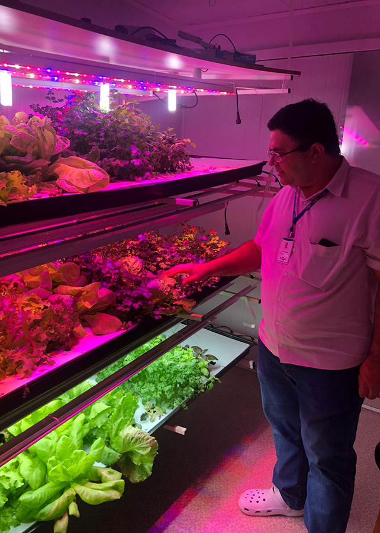

Modelos de Cultivo Eficientes
Existem diversos modelos de cultivo que podem aumentar a eficiência na produção de alimentos, reduzindo o uso de recursos naturais e maximizando a produtividade. Alguns exemplos incluem a horta vertical e a agricultura indoor.
Horta Vertical
A horta vertical é um sistema de cultivo em que as plantas são cultivadas em estruturas verticais, aproveitando o espaço de forma eficiente. Esse modelo de cultivo é ideal para ambientes urbanos e espaços limitados, onde o cultivo tradicional em solo não é viável. Além de economizar espaço, a horta vertical também pode economizar água, reduzir a incidência de pragas e doenças, e proporcionar uma estética agradável.
Agricultura Indoor

A agricultura indoor é um modelo de cultivo em que as plantas são cultivadas dentro de ambientes controlados, como estufas ou instalações com iluminação artificial. Esse método permite o cultivo durante todo o ano, independentemente das condições climáticas externas, e oferece controle preciso sobre fatores como temperatura, umidade e iluminação. A agricultura indoor é especialmente vantajosa em regiões com climas extremos ou onde a disponibilidade de terras agricultáveis é limitada.